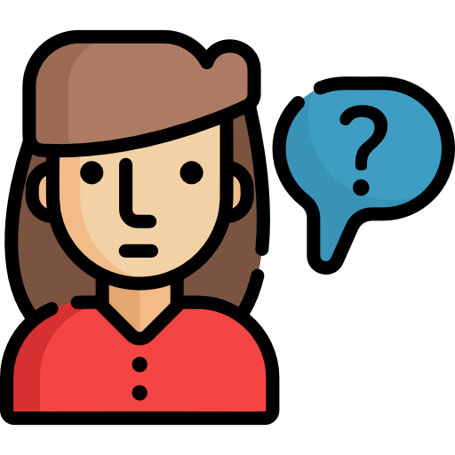

關於我
-

反應快
之前的工作常常會有許多突發狀況，必須即時作出處理，讓我的反應越來越快，能夠在短時間內找出應變知道。 -

有條理
我是一個做事情很有條理的人，習慣在做事前擬定計畫和流程，讓自己能夠大概了解方向和步驟，做事時也比較不容易慌亂。 -

求知慾強
我是一個充滿好奇心的人，對於自己有興趣的事有非常強的求知慾，會常常想要在了解更深、學習更多。
-

樂於助人
我很喜歡協助別人解決問題，也非常喜歡和別人分享我所學的知識，讓大家能共同進步。 -

善於溝通
我從大學時期就開始做服務業，常常必須面對各式各樣的客人和情況，也在這之中讓自己的溝通能力提升不少，更懂得與人應對。 -

學習能力強
以前在小米擔任培訓時，常常必須在短時間內掌握新知識，因此讓我自己的學習能力提升不少，能在短時間內了解並吸收新知識。